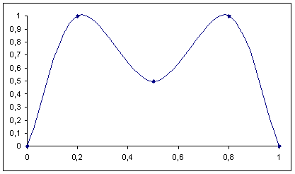

ptgen - Procedural Texture Generator
Paolo Bonzini
esame di Elaborazione e Trasmissione delle Immagini
Uso del programma
Descrizione del linguaggio
Struttura di un programma
Espressioni
Vettori
Matrici
Funzioni
Funzioni matematiche
Interpolatori
Immagini di base
Rumore bianco
Rumore frattale
Definizione a partire da una formula
Immagini derivate
Composizione dei canali RGB
Trasformazione delle coordinate cromatiche
Deformazione di un'immagine preesistente
Conversione in greyscale di un'immagine
Convoluzione
Operatori aritmetici
Esempi
Marmo
Legno
Insieme di Mandelbrot
Generazione di un paesaggio
Note sull'implementazione
Uso del programma
Il programma ha esclusivamente un'interfaccia a linea di comando. La
sintassi della linea di comando ricalca quella delle utility standard
Unix:
ptgen OPZIONI... INPUT-FILE
Le opzioni disponibili sono (ciascuna opzione ha un nome lungo e uno
breve):
-o
--output-file |
Imposta il nome del file su cui
verrà scritta l'immagine. - indica lo standard
output, il default è ptgen.ppm o
ptgen.png. |
-f
--file-format |
Imposta il formato di file con cui
verrà scritta l'immagine; i possibili formati sono PPM
e PNG (quest'ultimo solo se al momento della compilazione era
disponibile la libreria libpng). Il default
è PPM. |
-s
--size |
Imposta la dimensione delle immagini
trattate dal programma; deve essere una potenza di 2. Il default
è 256. |
-S
--seed |
Imposta il seme per i numeri casuali.
Il default è di utilizzare un seme diverso per ogni
esecuzione calcolandolo dall'ora corernte. |
Descrizione del linguaggio
Struttura di un programma
Un programma è costituito da una serie di definizioni seguite
da un solo comando che specifica l'immagine da scrivere sul file. Le
definizioni possono dichiarare costanti, funzioni o immagini accessorie
da usare per la creazione dell'immagine finale.
Mentre la dichiarazione di funzioni serve semplicemente per dare loro
un nome e quindi per aumentare la leggibilità del programma, la
dichiarazione di costanti o immagini può essere utile perché
in questo modo il calcolo viene compiuto una volta sola. Per esempio
può essere utile una dichiarazione del tipo
let SQRT2 := sqrt(2);
per calcolare la radice quadrata di 2 una volta sola.
Come si capisce dall'esempio, la struttura delle dichiarazioni è
let NOME := ESPRESSIONE;
Una dichiarazione non è una dichiarazione di variabile.
Infatti un simbolo che compare in una dichiarazione non è
più modificabile in alcun modo. Inoltre una dichiarazione
può associare un nome anche a vettori, matrici, funzioni o
immagini, mentre le variabili propriamente dette (vedi al paragrafo
Espressioni) contengono solo valori numerici. I simboli
dichiarati devono iniziare con una lettera maiuscola.
I comandi per la creazione di immagini hanno una sintassi che ricalca
l'inglese, un po' come il linguaggio SQL. Come in SQL, essi iniziano con un
verbo inglese.
Espressioni
Le espressioni calcolate da ptgen sono tutte in virgola
mobile e su numeri reali. Sono supportati tutti gli operatori matematici
comuni (+, -, *, /,
^), le funzioni matematiche (cos, sin,
tan, acos, asin, atan,
cosh, sinh, tanh, exp,
log, sqr, sqrt, abs)
e altre funzioni speciali (clamp che limita un valore al range
[0,1], frac e tile che generano forme a
dente di sega e triangolari, rand che genera un numero casuale
compreso tra 0 e l'argomento, atan2 e hypot per
convertire in coordinate polari, min e max). In
realtà le espressioni possono essere veri e propri programmi di
complessità arbitraria; esiste infatti la possibilità di
usare:
- sequenze di espressioni: la sintassi
(ESPR1; ESPR2) valuta
le due espressioni in sequenza e ritorna il valore calcolato per
ESPR2;
- variabili: una variabile è considerata dichiarata quando compare a
sinistra dell'operatore di assegnazione
:=, da non confondere
con l'identico simbolo usato nelle dichiarazioni let; una
variabile si può usare in un'espressione solo dopo che è
stata dichiarata, ed è sempre locale ad un'espressione.
- condizionali: la sintassi
if COND then ESPR1 else ESPR2
valuta una sola delle due espressioni (o sequenze di espressioni), a
seconda del valore della condizione. All'interno della condizione possono
apparire gli operatori relazionali <, <=,
>, >=, =, != e
gli operatori booleani and, or, not,
e xor;
- cicli: la sintassi
while COND do LOOP valuta l'espressione
(o sequenza di espressioni) LOOP fintantoché la
condizione COND è vera. Se l'espressione viene valutata
almeno una volta si ritorna l'ultimo valore calcolato prima di uscire dal
ciclo, altrimenti si ritorna 0 (zero).
Per, esempio la seguente espressione corrisponde al ciclo centrale di
calcolo dell'insieme di Mandelbrot per il punto x+iy del piano
complesso:
(N := 1;
ZRE := X;
ZIM := Y;
while N < 100 and sqr(ZRE)+sqr(ZIM) <= 4 do (
TMP := sqr(ZRE)-sqr(ZIM) + X;
ZIM := 2*ZRE*ZIM + Y;
ZRE := TMP;
N := N + 1);
if N == 100 then 0 else N)
e ritorna il numero di iterazioni necessarie prima che la serie
zn=z2n-1+c diverga, o 0 se essa
converge.
Vettori
La dichiarazione di un vettore corrisponde a più espressioni
comprese tra parentesi quadre e separate da virgole, per esempio
[1,2,Y,(if X < 0.5 then 0.5 else X)]
I vettori vengono usati per definire matrici e per definire particolari
funzioni, gli interpolatori.
Matrici
La dichiarazione di una matrice corrisponde a più vettori
comprese tra parentesi quadre, per esempio
[[1,X]
[Y,4]]
Le matrici vengono usate per applicare ad un'immagine l'operatore
convoluzione.
Funzioni
ptgen permette di definire due tipi di funzioni: sia
normali funzioni che accettano parametri e il cui valore si calcola
valutando un'espressione, sia funzioni particolari che effettuano
interpolazioni lineari o spline e vengono ottimizzate dall'interprete.
Le funzioni si possono richiamare dalle espressioni specificando una lista
di parametri attuali, separati da virgole e racchiusi tra parentesi, dopo
il nome della funzione.
Le funzioni di ptgen possono essere usate come funzioni anonime
(funzioni lambda) semplicemente facendo seguire la loro definizione dagli
argomenti. Per rendere più chiaro un programma che faccia uso di
funzioni anonime, le definizioni di funzione si possono porre tra parentesi.
Un esempio di utilizzo di funzioni anonime è
(f(X,Y)=sqrt(sqr(X)+sqr(Y))) (A-0.5, B-0.5)
Questo pezzo di codice definisce una funzione che accetta due parametri e
calcola la distanza dall'origine del punto che essi rappresentano, e la applica
al punto di coordinate (A-0.5,B-0.5), dove A e
B sono variabili definite altrove.
Funzioni matematiche
Una funzione matematica è una funzione definita da un'espressione. La
sintassi per definire una funzione matematica è
f(PARAMETRI)=ESPRESSIONE
dove parametri è una lista di parametri formali separati da virgole.
Come le variabili, anche i parametri formali devono iniziare con una lettera
maiuscola.
Importante: all'interno di una funzione anonima non sono disponibili
le variabili appartenenti alla funzione che racchiude la dichiarazione.
Interpolatori
Un interpolatore è un tipo particolare di funzione a un argomento che
può essere espressa in modo molto conciso e viene ottimizzata
dall'interprete. Un interpolatore è definito da due vettori di uguale
lunghezza, il primo dei quali rappresenta i valori dell'argomento
dell'interpolatore e il secondo dei quali rappresenta i valori restituiti
dall'interpolatore per i corrispondenti valori dell'interpolatore.
Per esempio:
map [0,1] to [0.5,1]
corrisponde nel dominio [0,1] alla funzione y=x/2+1,
mentre
map [0,0.5,1] to [1,0,1]
corrisponde nel dominio [0,1] alla funzione y=2 |x-1/2|
(infatti questa definizione interpola linearmente tra 1 e 0 per
0<=x<=0.5, e poi tra 0 e 1 per 0.5<x<1), e
infine
spline map [0,0.4, 0.5, 0.6, 1]
to [0, 1, 0.5, 1, 0]
corrisponde a questa funzione:

Importante: all'interno della dichiarazione di un interpolatore definito
come funzione anonima non sono disponibili le variabili appartenenti
alla funzione che racchiude la dichiarazione.
Immagini di base
ptgen fornisce tre operatori di base per creare immagini.
Questi non richiedono alcun immagine come parametro, ma solo numeri o
funzioni.
Rumore bianco
Il primo operatore è l'operatore create noise, che
crea un immagine di tipo rumore bianco. All'operatore possono essere
applicate una o tre funzioni a un argomento per variare la dinamica
dell'immagine risultante: se viene fornita una sola funzione, questa
verrà utilizzata per tutte e tre le componenti rosso, verde e
blu, mentre se vengono fornite tre funzioni, queste verranno applicate
ciascuna a una delle componenti additive.
L'argomento delle funzioni varierà tra 0 e 1, e anche il
risultato non può eccedere questi valori (altrimenti viene
troncato a 0 o 1).
La sintassi è (le parentesi quadre indicano elementi opzionali
e le graffe elementi alternativi):
create noise
[output range
{FUNC | red FUNC green FUNC | blue FUNC}]
 |
create noise
Questo è il più semplice programma che
ptgen può interpretare, e crea un
rumore bianco a livelli di grigio.
|
 |
let MAP := map [0,0.5, 0.5,1]
to [0,0, 1,1];
create noise output range MAP
Questo programma usa un interpolatore per creare una funzione
gradino, che ptgen applica per creare un rumore
bianco monocromatico.
|
 |
let RED_MAP := f(X)=0;
let GREEN_MAP := map [0,1] to [0,1];
let BLUE_MAP := map [0,1] to [1,0];
create noise output range red RED_MAP green GREEN_MAP blue BLUE_MAP
In questo caso vengono usate tre funzioni di uscita: si vede come
funzioni matematiche (RED_MAP) e interpolatori siano
completamente interscambiabili. Per un ingresso pari a zero le
tre funzioni generano un colore blu, per un ingresso pari a 1
invece esse generano il verde; il rumore bianco generato
quindi avrà colori variabili tra blu e verde.
|
Rumore frattale
Un secondo operatore create perlin noise crea un'immagine di
tipo rumore frattale. Come nel caso precedente possono essere applicate una o
tre funzioni a un argomento per variare la dinamica dell'immagine risultante;
inoltre si può definire la scala del rumore frattale generato,
ovvero il numero di ottave sommate per generare l'immagine. Il default è
1 che corrisponde a log2 n/2 ottave, dove n è
la dimensione dell'immagine; raddoppiare la scala elimina l'ottava a frequenza
più bassa, aumentando così la componente casuale del rumore.
La sintassi è:
create perlin noise
[scale EXPR]
[output range
{FUNC | red FUNC green FUNC | blue FUNC}]
 |
create perlin noise
Questo è l'aspetto del rumore frattale.
|
 |
let RED := map [0,1] to [0.4,1];
let GREEN := map [0,1] to [0.4,1];
let BLUE := map [0,1] to [0.8,1];
create perlin noise
output range
red RED
green GREEN
blue BLUE
E' sufficiente mappare l'uscita del rumore frattale su una
sfumatura da azzurro a bianco per ottenere una texture a "nuvole".
|
Definizione a partire da una formula
L'ultimo operatore di base utilizza una o tre funzioni a due argomenti per
generare un'immagine. Per ciascun pixel verranno passate alle funzioni le
coordinate x ed y, normalizzate tra 0 e 1 in modo che il
comportamento del programma sia indipendente dalla dimensione dell'immagine
generata. Se si fornisce una sola funzione, l'immagine generata sarà
a scala di grigi, altrimenti sarà a colori.
La sintassi è:
create image from
{FUNC | red FUNC green FUNC | blue FUNC}
 |
create image from f(X,Y)=(X+Y)/2
Questo programma genera una semplice sfumatura diagonale dall'angolo
in alto a sinistra (dove la funzione vale 0) a quello in basso a
destra (dove vale 1).
|
 |
let LINEAR := map [0,0.4,0.5,0.6,1] to [0,0.9,1,0.9,0];
create image from f(X,Y)=(LINEAR(X)+LINEAR(Y))/2
Ecco la differenza tra un interpolatore lineare...
|
 |
let SPLINE := spline map [0,0.4,0.5,0.6,1] to [0,0.9,1,0.9,0];
create image from f(X,Y)=(SPLINE(X)+SPLINE(Y))/2
... e uno basato su spline.
|
Immagini derivate
Altri operatori forniti da ptgen permettono di operare in vari
modi su immagini già create.
Per specificare un immagine si può utilizzare un nome già
dichiarato tramite let, oppure inserire un altro operatore tra
parentesi.
Composizione dei canali RGB
Questo è il primo operatore che accetta altre immagini. Esso utilizza
tre immagini in ingresso e fornisce in uscita un'immagine che utilizza il
canale rosso della prima, il canale verde della seconda, e il canale blu della
terza.
create image from
red IMAGE green IMAGE blue IMAGE
Nonostante la (voluta) somiglianza tra la sintassi di questo operatore e
quella del precedente, è importante sottolineare che non è mai
possibile utilizzare un'immagine come funzione. Questo operatore in altre
parole accetta tre immagini e il precedente accetta tre funzioni, ma queste
sono le due sole possibilità. Non esiste un operatore che accetti due
immagini e una funzione, o un'immagine e due funzioni.
 |
let RED_NOISE := create noise;
let GREEN_NOISE := create noise;
let BLUE_NOISE := create noise;
create image from red RED_NOISE green GREEN_NOISE blue BLUE_NOISE
Questo programma compone tre diverse immagini di tipo rumore bianco
per ottenere un rumore bianco non più grigio ma a colori.
|
Trasformazione delle coordinate cromatiche
Un altro operatore permette di applicare una o tre funzioni per variare
la dinamica dell'immagine passata come parametro, un po' come accade per
l'output di create noise: se viene fornita una sola funzione,
questa verrà utilizzata per tutte e tre le componenti rosso, verde
e blu, mentre se vengono fornite tre funzioni, queste verranno applicate
ciascuna a una delle componenti additive.
Le funzioni inoltre possono accettare una o tre argomenti. Una funzione a tre
argomenti accetta le tre componenti rosso/verde/blu, mentre ad una funzione a
un argomento (come per esempio un interpolatore) viene passata la componente
in esame.
apply
{FUNC|red FUNC green FUNC blue FUNC}
to IMAGE
 |
let RED_MAP := map [0,0.5,1] to [0,1,1];
let GREEN_MAP := map [0,1] to [0,0];
let BLUE_MAP := map [0,0.5,1] to [0,0,1];
apply
red RED_MAP
green GREEN_MAP
blue BLUE_MAP
to (create image from f(X,Y)=(X+Y)/2)
In questo caso la sfumatura da bianco a nero viene trasformata in una
da bianco a rosso a viola. Gli interpolatori funzionano come funzioni a
un argomento.
|
Deformazione di un'immagine preesistente
Un'altra versione dell'operatore apply permette di
rimappare una porzione di un'immagine su di un'altra, tramite due
funzioni a due argomenti che forniscono le coordinate del punto
da utilizzare dell'immagine sorgente.
apply
x FUNC
y FUNC
to IMAGE

|
let PING_PONG := map [0,0.5,1]
to [0,1, 0];
apply
x f(X,Y)=PING_PONG(X)
y f(X,Y)=PING_PONG(Y)
to (create image from f(X,Y)=(X+Y)/2)
L'interpolatore PING_PONG produce in uscita prima i
valori da 0 e 1 e poi di nuovo i valori da 1 a 0. Il risultato quindi
corrisponde a una versione a simmetria orizzontale e verticale della
sfumatura prodotta da un esempio precedente.
|

 |
let BASE := create image from f(X,Y)=min(tile(2*X),tile(2*Y));
let ANGLE := f(X,Y)=8*hypot(X,Y);
let WHIRLY := apply
x f(X,Y)=(XX:=X-0.5; YY:=Y-0.5; A:=ANGLE(XX,YY); 0.5+cos(A)*XX-sin(A)*YY)
y f(X,Y)=(XX:=X-0.5; YY:=Y-0.5; A:=ANGLE(XX,YY); 0.5+sin(A)*XX+cos(A)*YY)
to BASE;
apply
red map[0,0.3,0.8,1] to[0,0,0.8,1]
green map[0,0.3,0.8,1] to [0,0,1,1]
blue map[0,0.3,0.8,1] to [0,0.8,1,1]
to WHIRLY;
La seconda immagine (BASE) viene ruotata intorno al
centro (vedi variabili XX e YY) di un angolo
proporzionale alla distanza dal centro stesso
(funzione ANGLE).
|

 |
let BASE := create image from f(X,Y)=(sin(pi*4*X)+cos(pi*7*Y)+2)/4;
let DISTORT := apply
x f(X,Y)=tile(X+sin(3*Y))
y f(X,Y)=tile(Y+cos(3*X))
to BASE;
apply
red map[0,0.3,0.8,1] to [0,0,1,1]
green map[0,0.3,0.8,1] to[0,0,0.8,1]
blue map[0,0.3,0.8,1] to [0,0.5,0.5,0]
to DISTORT;
Le righe e le colonne della seconda immagine (BASE)
vengono spostate secondo una funzione seno o coseno. La funzione
tile produce una forma triangolare che varia tra 0 e 1
e viene usata per evitare discontinuità tra il lato sinistro
e quello destro della seconda immagine.
|
Conversione in greyscale di un'immagine
Un operatore molto semplice e senza opzioni permette di convertire
un'immagine a colori in una a scala di grigi. La sintassi è
create greyscale image from IMAGE
 |
let NOISE := create noise output range red map [0,1] to [0,0]
green map [0,1] to [0,1]
blue map [0,1] to [0,0];
create greyscale image from NOISE
L'effetto dell'operatore è in realtà poco chiare.
Dato che l'immagine di partenza è virata sul verde, il
risultato è più scuro che quello di un semplice
comando create noise.
|
Convoluzione
Quest'ultimo operatore permette di effettuare una convoluzione tra
un'immagine e una matrice. Al risultato si può applicare un fattore
di scala e sommare un valore costante.
La matrice di partenza non deve necessariamente essere quadrata; in questo
modo si possono implementare efficientemente filtri separabili. Tuttavia essa
deve avere un numero dispari di righe e di colonne. I pixel di bordo vengono
processati per riflessione.
La sintassi è
convolve IMAGE
with MATRIX
[scale NUMBER]
[bias NUMBER]
 |
let MAP := map [0,0.4,0.5,0.6,1] to [0,0,1,0,0];
let CIRCLE := create image from f(X,Y)=(
DIST := hypot (XM,YM) * sqrt(2);
MAP(DIST));
convolve CIRCLE
with [[-1,0,0,0,0]
[0,-1,0,0,0]
[0, 0,0,0,0]
[0, 0,0,1,0]
[0, 0,0,0,1]]
scale 2
bias 0.5;
In questo caso l'immagine di partenza è un anello grande come
metà dell'immagine. convolve viene usato come
filtro passa alto.
|
Operatori aritmetici
Una vasta gamma di effetti si può infine ottenere tramite questo
operatore che compie operazioni aritmetiche tra due immagini, con la
possibilità di specificare un fattore di trasparenza.
La sintassi è
apply TOP_IMAGE to SRC_IMAGE
[operation OP]
[opacity NUMBER]
Dopo aver effettuato l'operazione aritmetica, l'immagine
SRC_IMAGE ed il risultato vengono miscelati in ragione
del fattore di trasparenza, che deve essere compreso tra 0 ed 1: se
NUMBER è 1 (o non è specificato) l'immagine
prodotta è uguale al risultato dell'operazione, se è 0
l'immagine prodotta è uguale all'immagine di partenza.
L'operazione è una di queste:
 |
let SRC1 := create image from red f(X,Y)=0 green f(X,Y)=0 blue f(X,Y)=X;
let SRC2 := create image from red f(X,Y)=1 green f(X,Y)=1 blue f(X,Y)=X;
apply SRC2 to SRC1 opacity 0.7
blend è il valore di default e miscela le due immagini
secondo il fattore specificato senza applicare alcuna operazione
aritmetica. Occorre specificare il fattore di trasparenza,
perché il valore di default semplicemente mostra l'immagine
TOP_IMAGE.
In questo caso viene miscelata una sfumatura da nero a blu con una da
giallo a bianco, mostrando il 70% della prima e il 30% della seconda.
|
 |
let SRC1 := create image from red f(X,Y)=0 green f(X,Y)=0 blue f(X,Y)=X;
let SRC2 := create image from red f(X,Y)=1 green f(X,Y)=1 blue f(X,Y)=X;
apply SRC2 to SRC1 operation dissolve opacity 0.7
Anche dissolve miscela le due immagini secondo il fattore
specificato senza applicare alcuna operazione aritmetica. Tuttavia,
invece che effettuare la miscelazione per ogni pixel, ptgen
sceglie casualmente da quale delle due immagini prelevare il pixel.
Anche in questo caso occorre specificare il fattore di trasparenza,
perché il valore di default semplicemente mostra l'immagine
TOP_IMAGE.
|
 |
let SRC1 := create image from red f(X,Y)=0 green f(X,Y)=0 blue f(X,Y)=X;
let SRC2 := create image from red f(X,Y)=1 green f(X,Y)=1 blue f(X,Y)=0;
apply SRC2 to SRC1 operation replace hue
replace hue preleva la tinta dall'immagine
TOP_IMAGE e mantiene il valore e la saturazione di
SRC_IMAGE. In questo caso applica una tinta gialla a
una sfumatura da nero a blu, ottenendo come risultato una sfumatura
da nero a giallo.
|
 |
let SRC1 := create image from red f(X,Y)=X green f(X,Y)=X blue f(X,Y)=0;
let SRC2 := create image from f(X,Y)=0.5;
apply SRC2 to SRC1 operation replace saturation
replace saturation preleva la saturazione dall'immagine
TOP_IMAGE e mantiene il valore e la tinta di
SRC_IMAGE. In questo caso applica saturazione nulla ad
una sfumatura da nero a giallo, ottenendo come risultato una
sfumatura da nero a bianco (che nel sistema HSV hanno
saturazione nulla).
|
 |
let SRC1 := create image from red f(X,Y)=1 green f(X,Y)=1 blue f(X,Y)=0;
let SRC2 := create image from f(X,Y)=X;
apply SRC2 to SRC1 operation replace value
replace value preleva il valore dall'immagine
TOP_IMAGE e mantiene la saturazione e la tinta di
SRC_IMAGE. In questo caso applica ad un'immagine
interamente gialla il valore di una sfumatura da nero a bianco,
ottenendo come risultato una sfumatura da nero a giallo. Al
contrario che nel sistema HLS (usato dall'operatore successivo,
replace color), valori alti della componente V non producono
il bianco ma il colore puro, per cui il risultato è una
sfumatura da bianco a giallo.
|
 |
let SRC1 := create image from red f(X,Y)=X green f(X,Y)=X blue f(X,Y)=X;
let SRC2 := create image from red f(X,Y)=1 green f(X,Y)=1 blue f(X,Y)=0;
apply SRC2 to SRC1 operation replace color
replace color preleva la tinta e la saturazione dall'immagine
TOP_IMAGE e mantiene la luminosità di
SRC_IMAGE. In questo caso applica un'immagine interamente
gialla ad una sfumatura da nero a bianco, ottenendo come risultato una
sfumatura da nero a giallo a bianco. Infatti valori alti della componente
L producono il bianco.
|
 |
let SRC1 := create image from f(X,Y)=X;
let SRC2 := create image from f(X,Y)=1-X;
apply SRC2 to SRC1 operation darken
darken prende per ogni pixel quello più scuro tra le due
immagini. |
 |
let SRC1 := create image from f(X,Y)=X;
let SRC2 := create image from f(X,Y)=1-X;
apply SRC2 to SRC1 operation lighten
lighten prende per ogni pixel quello più chiaro tra le
due immagini. |
 |
let SRC1 := create image from red f(X,Y)=0 green f(X,Y)=0 blue f(X,Y)=X;
let SRC2 := create image from red f(X,Y)=1 green f(X,Y)=1 blue f(X,Y)=X;
apply SRC2 to SRC1 operation add
add somma le due immagini. L'eventuale saturazione a 1 del
valore risultante viene effettuata dopo l'operazione di miscelazione. In
questo caso la somma delle due componenti blu satura a metà
immagine, per cui la parte destra è interamente bianca.
|
 |
let SRC1 := create image from red f(X,Y)=0 green f(X,Y)=1 blue f(X,Y)=1;
let SRC2 := create image from red f(X,Y)=1 green f(X,Y)=0 blue f(X,Y)=X*2;
apply SRC2 to SRC1 operation subtract
subtract sottrae le due immagini. L'eventuale saturazione a 0
del valore risultante viene effettuata dopo l'operazione di miscelazione.
In questo caso la sottrazione delle due componenti blu satura a
metà immagine, per cui la metà destra dell'immagine
è omogeneamente verde.
|
 |
let SRC1 := create image from red f(X,Y)=0 green f(X,Y)=1 blue f(X,Y)=0.5;
let SRC2 := create image from red f(X,Y)=0 green f(X,Y)=0 blue f(X,Y)=X;
apply SRC2 to SRC1 operation difference
difference sottrae le due immagini e ne tiene il valore
assoluto. Non può quindi esserci saturazione. In questo caso i
valori della componente blu dopo la sottrazione variano tra 0.5 e -0.5;
l'operazione di valore assoluto produce la doppia sfumatura da ciano a
verde e di nuovo da verde a ciano.
|
 |
let SRC1 := create image from red f(X,Y)=X green f(X,Y)=X blue f(X,Y)=X;
let SRC2 := create image from red f(X,Y)=X green f(X,Y)=1-X blue f(X,Y)=X;
apply SRC2 to SRC1 operation multiply
multiply moltiplica tra di loro le due immagini. L'immagine
risultante è sempre più scura di entrambe le immagini
sorgente.
|
 |
let SRC1 := create image from red f(X,Y)=X green f(X,Y)=X blue f(X,Y)=X;
let SRC2 := create image from red f(X,Y)=X green f(X,Y)=1-X blue f(X,Y)=X;
apply SRC2 to SRC1 operation screen
screen è il negativo della moltiplicazione dei due
negativi. L'immagine risultante è sempre più chiara di
entrambe le immagini sorgente.
|
 |
let SRC1 := create image from red f(X,Y)=X green f(X,Y)=X blue f(X,Y)=X;
let SRC2 := create image from red f(X,Y)=X green f(X,Y)=1-X blue f(X,Y)=X;
apply SRC2 to SRC1 operation overlay
L'operatore overlay è ha un effetto piuttosto complesso:
esso si comporta come multiply quando l'immagine di partenza
SRC_IMAGE è scura (a sinistra), e come screen
quando essa è chiara (a destra).
Questo esempio rende abbastanza chiaro il suo funzionamento. In questo
caso viene applicata una sfumatura da verde a porpora su una da nero a
bianco, e il risultato è simile a quello dell'operatore
replace color.
|
Esempi
Marmo
 |
Per produrre il marmo si parte da una serie di strisce verticali
(prodotte da una funzione seno) e si applica un rumore frattale per
deformarle. Si usa un trucco per simulare una funzione di x, di
y e del rumore frattale: si assegnano questi ai tre canali di
un'immagine e poi si lavora su questa.
let MARB_SCALE := 8; // Più è basso, più le venature si attorcigliano
let MARB_POWER := 0.35; // Più è alto, più le venature sono nette
let MARB_PERIOD := 2; // Più è basso, minore è lo spazio tra le venature
let TURBULENCE_PIC := create perlin noise scale MARB_SCALE;
let X_PIC := create image from f(X,Y)=X;
let Y_PIC := create image from f(X,Y)=Y;
let MARBLE_FUNCTION := f(DELTA,X,Y) =
abs (sin (pi * (Y / MARB_PERIOD - MARB_POWER * DELTA)));
apply MARBLE_FUNCTION to
(create image from
red TURBULENCE_PIC
green X_PIC
blue Y_PIC);
|
 |
Cambiando i parametri l'effetto è opposto:
let MARB_SCALE := 1;
let MARB_POWER := 4.5;
let MARB_PERIOD := 0.3;
|
Legno
 |
Il legno è abbastanza simile al marmo, ma le strisce non sono
verticali ma radiali. La turbolenza si può controllare radialmente
e linearmente. Aumentare la turbolenza lineare deforma gli anelli, mentre
aumentare la turbolenza radiale li rende di forma stellata.
Le immagini X_PIC e Y_PIC sono spostate
sul centro dell'immagine per evitare effetti di saturazione.
let WOOD_X_SCALE := 0.8;
let WOOD_LINEAR_SCALE := 4;
let WOOD_RADIAL_SCALE := 16;
let WOOD_LINEAR_POWER := 0.225;
let WOOD_RADIAL_POWER := 0.3;
let WOOD_PERIOD := 0.1;
let T1_PIC := create perlin noise scale WOOD_LINEAR_SCALE;
let T2_PIC := create perlin noise scale WOOD_RADIAL_SCALE;
let X_PIC := create image from f(X,Y)=abs(X-0.5)*WOOD_X_SCALE;
let Y_PIC := apply T1_PIC to (create image from f(X,Y)=abs(Y-0.5))
operation add
opacity WOOD_LINEAR_POWER;
let WOOD_FUNCTION := f(TURB,X,Y)=(
R := hypot(X, Y) / WOOD_PERIOD - WOOD_RADIAL_POWER * TURB;
abs (sin (pi * R)));
let WOOD_GREYSCALE := apply WOOD_FUNCTION to
(create image from red T2_PIC green X_PIC blue Y_PIC);
Per produrre l'immagine finale si applica una colorazione da marrone
scuro a marrone chiaro:
let RED_MAP := map [0,1] to [0.55,0.75];
let GREEN_MAP := map [0,1] to [0.35,0.55];
let BLUE_MAP := map [0,1] to [0,0.2];
apply red RED_MAP green GREEN_MAP blue BLUE_MAP to WOOD_GREYSCALE
|
Insieme di Mandelbrot
 |
Questa texture che disegna l'insieme di Mandelbrot mostra la
possibilità di usare ptgen per scrivere velocemente
prototipi di programmi che generano immagini prima di passare ad altri
linguaggi, quasi come in un linguaggio di scripting.
let MANDEL := f(X,Y)=(N := 1;
ZRE := X;
ZIM := Y;
while N < 100 and sqr(ZRE)+sqr(ZIM) <= 4 do (
TMP := sqr(ZRE)-sqr(ZIM) + X;
ZIM := 2*ZRE*ZIM + Y;
ZRE := TMP;
N := N + 1);
if N == 100 then 0 else N/100);
let REAL := map [0,1] to [-2.5,1.5];
let IMAG := map [0,1] to [-2,2];
let GREYSCALE := create image from f(X,Y)=MANDEL(REAL(X),IMAG(Y));
let RED := map [0,0.05,0.65,1] to [0,1,1,1];
let GREEN := map [0,0.05,0.65,1] to [0,0,1,1];
let BLUE := map [0,0.05,0.65,1] to [0,0,0,1];
apply red RED green GREEN blue BLUE to GREYSCALE
|
Generazione di un paesaggio
 |
Per prima cosa viene creata la mappa 2D del pianeta, colorata in modo
da creare nuvole sul mare e dare un colore grigio o marrone alla
terra:
let HEIGHTS := [0,0.2,0.4,0.5,0.5,0.6,0.6, 0.9, 0.9,1];
let MAP := create perlin noise scale 2 output range
red map HEIGHTS to [1,1 ,0, 0, 0.3,0.7,0.75,0.55,0.6,1]
green map HEIGHTS to [1,1 ,0, 0, 0.3,0.7,0.55,0.35,0.6,1]
blue map HEIGHTS to [1,1 ,0.5,0.5,0.3,0.7,0.2, 0, 0.6,1];
Il passo successivo è di creare l'ombra (usando la legge di Lambert)
ed applicarla alla mappa:
let SHADOW := create image from f(X,Y)=1-max(cos(Y*pi),0);
let SHADED := apply SHADOW to MAP operation multiply;
Per mappare sulla sfera il paesaggio, occorre dedurre gli angoli in
coordinate sferiche dalle coordinate x, y e z (che
variano da -1 a 1). Le seguenti formule si basano sul fatto che
x=cos(theta) sin(phi), y=cos(theta) cos(phi),
z=sin(theta).
let PHI := f(X,Y,Z)=atan2(X,Y);
let THETA := f(X,Y,Z)=atan2(hypot(X,Y),Z);
let Y := f(X,Z)=sqrt(1-sqr(X)-sqr(Z));
Questo complesso operatore apply prende un punto dalla mappa
bidimensionale, utilizzando theta e phi (meridiano e
parallelo) come coordinate nella mappa; fuori dalla sfera unitaria
i punti saranno neri (dopo aver aggiunto l'ombra l'origine è
nera):
let PLANET := apply x f(XX,ZZ)=(
X := 2*XX-1; Z := 2*ZZ-1;
if hypot(X,Z)>1 then 0 else 0.5+THETA(X,Y(X,Z),Z)/pi/2)
y f(XX,ZZ)=(
X := 2*XX-1; Z := 2*ZZ-1;
if hypot(X,Z)>1 then 0 else 0.5+PHI(X,Y(X,Z),Z)/pi/2)
to SHADED;
Infine si aggiungono le stelle al di fuori della sfera unitaria:
let STARS := create image from f(XX,ZZ)=(
X := 2*XX-1; Z := 2*ZZ-1;
if hypot(X,Z)>1 and rand(1)>0.995
then rand(1)/2+0.5 else 0);
apply STARS to PLANET operation add
|
Note sull'implementazione
Il programma è scritto in C++, utilizzando flex e bison
per l'analisi lessicale e sintattica dell'input. La valutazione delle
espressioni viene fatta semplicemente visitando l'albero dell'espressione che
viene prodotto dall'analizzatore sintattico.
Le gerarchie di classi principali sono cinque:
- ptgen_function: funzioni, comprende funzioni e interpolatori
- interpolator: interpolatori, lineari e spline
- expression: espressioni matematiche
- predicate: espressioni booleane
- image: algoritmi di generazione delle immagini
Le definizioni delle immagini producono in pratica un grafo diretto aciclico
che viene poi visitato seguendo un ordinamento topologico. Anche se le immagini
vengono cancellate quando tutti i nodi successori del grafo sono stati
calcolati, nel caso pessimo fino a metà delle immagini intermedie
potrebbero essere in memoria. Si potrebbe anche trovare un ordinamento
ottimo tramite un algoritmo di programmazione dinamica la cui
complessità computazionale è accettabile. Come riferimento
per gli operatori di miscelazione delle immagini si è usato il
sorgente del programma GIMP (file paint_funcs.c).
A
parte le funzioni di conversione tra gli spazi di colore RGB,
HSV ed HLS (preso dallo stesso file
paint_funcs.c), tutto il codice del programma (poco più
di 4500 righe di codice) è stato scritto da zero.